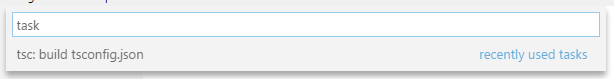
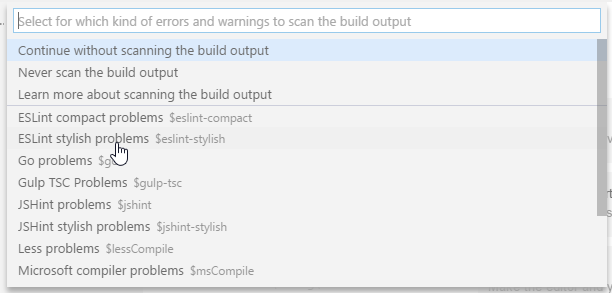
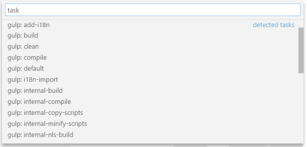
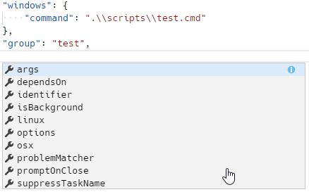

--- Order: 10 Area: editor TOCTitle: Tasks ContentId: F5EA1A52-1EF2-4127-ABA6-6CEF5447C608 PageTitle: Tasks in Visual Studio Code DateApproved: 9/7/2017 MetaDescription: Expand your development workflow with task integration in Visual Studio Code.
Integrate with External Tools via Tasks
If you are using Visual Studio Code version 1.13 or earlier, please refer to the previous version of the Tasks documentation.
Lots of tools exist to automate tasks like linting, building, packaging, testing or deploying software systems. Examples include the TypeScript Compiler, linters like ESLint and TSLint as well as build systems like Make, Ant, Gulp, Jake, Rake and MSBuild.

These tools are mostly run from the command line and automate jobs inside and outside the inner software development loop (edit, compile, test, and debug). Given their importance in the development life-cycle, it is very helpful to be able to run tools and analyze their results from within VS Code.
Note: Task support is only available when working on a workspace folder. It is not available when editing single files.
TypeScript Hello World
Let's start with a simple "Hello World" TypeScript program that we want to compile to JavaScript.
Create an empty folder "mytask", generate a
tsconfig.json file and start VS Code from that
folder.
mkdir mytask
cd mytask
tsc --init
code .
Now create a HelloWorld.ts file with the
following content
class Startup {
public static main(): number {
console.log('Hello World');
return 0;
}
}
Startup.main();
Pressing kb(workbench.action.tasks.build) or
running Run Build Task... from the global
Tasks menu show the following picker:

Selecting the entry executes the TypeScript compiler and
translates the TypeScript file to a JavaScript file. When the
compiler has finished, there should be a
HelloWorld.js file.
You can also define the TypeScript build task as the default
build task so that it is executed directly when triggering
Run Build Task
(kb(workbench.action.tasks.build)). To do so,
select Configure Default Build Task from the
global Tasks menu. This shows you a picker
with the available build tasks. Select
TypeScript and VS Code will generate the
following tasks.json file:
{
// See https://go.microsoft.com/fwlink/?LinkId=733558
// for the documentation about the tasks.json format
"version": "2.0.0",
"tasks": [
{
"type": "typescript",
"tsconfig": "tsconfig.json",
"problemMatcher": [
"$tsc"
],
"group": {
"kind": "build",
"isDefault": true
}
}
]
}
Unlike the previous 0.1.0 version of the
tasks.json file, this does not define a new task.
It annotates the TypeScript compile tasks contributed by VS
Code's TypeScript extension to be the default build task. You
can now execute the TypeScript compiler by simply pressing
kb(workbench.action.tasks.build).
Task auto-detection
VS Code currently auto-detects tasks for the following
systems: Gulp, Grunt, Jake and npm. We are working with the
corresponding extension authors to add support for Maven and
the C# dotnet command as well. If you develop a
JavaScript application using Node.js as the runtime, you
usually have a package.json file describing your
dependencies and the scripts to run. If you have cloned the
eslint-starter
example, then executing Run Tasks from the
global menu shows the following list:

Select npm: install to install the necessary Node.js modules. When prompted to select a problem matcher, select Continue without scanning the build output. This will install all necessary Node.js modules.
Now open the server.js file and add a semicolon
to the end of a statement (note the ESLint starter assumes
statements without a semicolon) and execute the
Run Tasks again. This time select the
npm: run lint task. When prompted for the
problem matcher to use, select ESLint stylish

Executing the task produces one error shown in the Problems view:

In additon, VS Code created a tasks.json file
with the following content:
{
// See https://go.microsoft.com/fwlink/?LinkId=733558
// for the documentation about the tasks.json format
"version": "2.0.0",
"tasks": [
{
"type": "npm",
"script": "lint",
"problemMatcher": [
"$eslint-stylish"
]
}
]
}
This instructs VS Code to scan the output of the npm lint script for problems using the ESLint stylish format.
For Gulp, Grunt, and Jake, the task auto-detection works the same. Below is an example of the tasks detected for the vscode-node-debug extension.

Tip: You can run your task through Quick Open (
kb(workbench.action.quickOpen)) by typing 'task',kbstyle(Space)and the command name. In this case, 'task lint'.
Custom tasks
Not all tasks or scripts can be auto-detected in your
workspace. Sometimes it is necessary to define your own custom
tasks. Assume you have a script to run your tests since it is
necessary to setup some environment correctly. The script is
stored in a script folder inside your workspace and named
test.sh for Linux and macOS and
test.cmd for Windows. Run
Configure Tasks from the global
Tasks menu. This opens the following picker:

Note: If you don't see the list of task runner templates, you may already have a
tasks.jsonfile in your folder and its contents will be open in the editor. Close the file and either delete or rename it for this example.
We are working on more auto-detection support, so this list
will get smaller and smaller in the future. Since we want to
write our own custom task, select Others from
the list. This opens the tasks.json file with a
task skeleton. Replace the contents with the following:
{
// See https://go.microsoft.com/fwlink/?LinkId=733558
// for the documentation about the tasks.json format
"version": "2.0.0",
"tasks": [
{
"taskName": "Run tests",
"type": "shell",
"command": "./scripts/test.sh",
"windows": {
"command": ".\\scripts\\test.cmd"
},
"group": "test",
"presentation": {
"reveal": "always",
"panel": "new"
}
}
]
}
The task's properties have the following semantic:
- taskName: The tasks's name used in the user interface.
-
type: The task's type. For a custom task,
this can either be
shellorprocess. Ifshellis specified, the command is interpreted as a shell command (for example: bash, cmd, or PowerShell). Ifprocessis specified, the command is interpreted as a process to execute. Ifshellis used, any arguments to the command should be embedded into thecommandproperty to support proper argument quoting. For example, if the test script accepts a--debugargument then the command property would be:./scripts/test.sh --debug. - command: The actual command to execute.
- windows: Any Windows specific properties. Will be used instead of the default properties when the command is executed on the Windows operating system.
-
group: Defines to which group the task
belongs. In the example, it belongs to the
testgroup. Tasks that belong to the test group can be executed by running Run Test Task from the Command Palette. -
presentation: Defines how the task output
is handled in the user interface. In this example, the
Integrated Terminal showing the output is
alwaysrevealed and anewterminal is created on every task run.
There are more task properties to configure your workflow. You
can use IntelliSense with
kb(editor.action.triggerSuggest) to get an
overview of the valid properties.

In addition to the global menu bar, task commands can be
accessed using the
Command Palette
(kb(workbench.action.showCommands)). You can
filter on 'task' and can see the various task related
commands.

Output behavior
Sometimes you want to control how the Integrated Terminal
panel behaves when running tasks. For instance, you may want
to maximize editor space and only look at task output if you
think there is a problem. The behavior of the terminal can be
controled using the presentation property of a
task. It offers the following properties:
- reveal: Controls whether the Integrated Terminal panel is brought to front. Valid values are:
- always - The panel is always brought to front. This is the default.
-
never - The user must explicitly bring the terminal
panel to the front using the View >
Integrated Terminal command
(
kb(workbench.action.terminal.toggleTerminal)). - silent - The terminal panel is brought to front only if the output is not scanned for errors and warnings.
-
focus: Controls whether the teminal is
taking input focus or not. Default is
false. -
echo: Controls whether the executed command
is echoed in the terminal. Default is
true. - panel: Controls whether the terminal instance is shared between task runs. Possible values are:
- shared: The terminal is shared and the output of other task runs are added to the same terminal.
- dedicated: The terminal is dedicated to a specific task. If that task is executed again, the terminal is reused. However the output of a different task is presented in a different terminal.
- new: Every execution of that task is using a new clean terminal.
You can modify the terminal panel behavior for auto-detected
tasks as well. For example, if you want to change the output
behavior for the npm: run lint from the
ESLint example from above, simply add the
presentation property to it:
{
// See https://go.microsoft.com/fwlink/?LinkId=733558
// for the documentation about the tasks.json format
"version": "2.0.0",
"tasks": [
{
"type": "npm",
"script": "lint",
"problemMatcher": [
"$eslint-stylish"
],
"presentation": {
"reveal": "never"
}
}
]
}
You can also mix custom tasks with configurations for detected
tasks. A tasks.json that configures the
npm: run lint task and adds a custom
Run Test tasks looks like this:
{
// See https://go.microsoft.com/fwlink/?LinkId=733558
// for the documentation about the tasks.json format
"version": "2.0.0",
"tasks": [
{
"type": "npm",
"script": "lint",
"problemMatcher": [
"$eslint-stylish"
],
"presentation": {
"reveal": "never"
},
},
{
"taskName": "Run tests",
"type": "shell",
"command": "./scripts/test.sh",
"windows": {
"command": ".\\scripts\\test.cmd"
},
"group": "test",
"presentation": {
"reveal": "always",
"panel": "new"
}
}
]
}
Customizing auto-detected tasks
As mentioned above, you can customize auto-detected tasks in
the tasks.json file. You usually do so to modify
presentation properties or to attach a problem matcher to scan
the task's output for errors and warnings. You can customize a
task directly from the Run Task list by
pressing the gear icon to the right to insert the
corresponding task reference into the
tasks.json file. Assume you have the following
Gulp file to lint JavaScript files using ESLint (the file is
taken from https://github.com/adametry/gulp-eslint):
const gulp = require('gulp');
const eslint = require('gulp-eslint');
gulp.task('lint', () => {
// ESLint ignores files with "node_modules" paths.
// So, it's best to have gulp ignore the directory as well.
// Also, Be sure to return the stream from the task;
// Otherwise, the task may end before the stream has finished.
return gulp.src(['**/*.js','!node_modules/**'])
// eslint() attaches the lint output to the "eslint" property
// of the file object so it can be used by other modules.
.pipe(eslint())
// eslint.format() outputs the lint results to the console.
// Alternatively use eslint.formatEach() (see Docs).
.pipe(eslint.format())
// To have the process exit with an error code (1) on
// lint error, return the stream and pipe to failAfterError last.
.pipe(eslint.failAfterError());
});
gulp.task('default', ['lint'], function () {
// This will only run if the lint task is successful...
});
Executing Run Task from the global Tasks menu will show the following picker:

Press the gear icon. This will create the following
tasks.json file:
{
// See https://go.microsoft.com/fwlink/?LinkId=733558
// for the documentation about the tasks.json format
"version": "2.0.0",
"tasks": [
{
"type": "gulp",
"task": "default",
"problemMatcher": []
}
]
}
Usually you would now add a problem matcher (in this case
$eslint-stylish) or modify the presentation
settings.
Processing task output with problem matchers
VS Code can process the output from a task with a problem matcher and we ship with a number of them 'in-the-box':
-
TypeScript:
$tscassumes that file names in the output are relative to the opened folder. -
TypeScript Watch:
$tsc-watchmatches problems reported from thetsccompiler when executed in watch mode. -
JSHint:
$jshintassumes that file names are reported as an absolute path. -
JSHint Stylish:
$jshint-stylishassumes that file names are reported as an absolute path. -
ESLint Compact:
$eslint-compactassumes that file names in the output are relative to the opened folder. -
ESLint Stylish:
$eslint-stylishassumes that file names in the output are relative to the opened folder. -
Go:
$gomatches problems reported from thegocompiler. Assumes that file names are relative to the opened folder. -
CSharp and VB Compiler:
$mscompileassumes that file names are reported as an absolute path. -
Less:
$lessCompileassumes that file names are reported as absolute path.
Problem matchers scan the task output text for known warning or error strings and report these inline in the editor and in the Problems panel.
You can also create your own problem matcher which we'll discuss in a later section.
Binding keyboard shortcuts to tasks
If you need to run a task frequently, you can define a keyboard shortcut for the task.
For example, to bind Ctrl+H to the
Run tests task from above, add the following
to your keybindings.json file:
{
"key": "ctrl+h",
"command": "workbench.action.tasks.runTask",
"args": "Run tests"
}
Variable substitution
When authoring tasks configurations, it is often useful to
have a set of predefined common variables. VS Code supports
variable substitution inside strings in the
tasks.json file and has the following predefined
variables:
- ${workspaceRoot} the path of the folder opened in VS Code
- ${workspaceRootFolderName} the name of the folder opened in VS Code without any slashes (/)
- ${file} the current opened file
-
${relativeFile} the current opened file
relative to
workspaceRoot - ${fileBasename} the current opened file's basename
- ${fileBasenameNoExtension} the current opened file's basename without the extension
- ${fileDirname} the current opened file's dirname
- ${fileExtname} the current opened file's extension
- ${cwd} the task runner's current working directory on startup
- ${lineNumber} the current selected line number in the active file
You can also reference environment variables through
${env:Name} (for example, ${env:PATH}). Be
sure to match the environment variable name's casing, for
example ${env:Path} on Windows.
Below is an example of a custom task configuration that passes the current opened file to the TypeScript compiler.
{
"taskName": "TypeScript compile",
"type": "shell",
"command": "tsc ${file}",
"problemMatcher": [
"$tsc"
]
}
Operating system specific properties
The task system supports defining values (for example, the
command to be executed) specific to an operating system. To do
so, put an operating system specific literal into the
tasks.json file and specify the corresponding
properties inside that literal.
Below is an example that uses the Node.js executable as a command and is treated differently on Windows and Linux:
{
"taskName": "Run Node",
"type": "process",
"windows": {
"command": "C:\\Program Files\\nodejs\\node.exe"
},
"linux": {
"command": "/usr/bin/node"
}
}
Valid operating properties are windows for
Windows, linux for Linux, and
osx for macOS. Properties defined in an operating
system specific scope override properties defined in the task
or global scope.
Task properties can also be defined in the global scope. If
present, they will be used for specific tasks unless they
define the same property with a different value. In the
example below, there is a global
presentation property that defines that all tasks
should be executed in a new panel:
{
// See https://go.microsoft.com/fwlink/?LinkId=733558
// for the documentation about the tasks.json format
"version": "2.0.0",
"presentation": {
"panel": "new"
},
"tasks": [
{
"taskName": "TS - Compile current file",
"type": "shell",
"command": "tsc ${file}",
"problemMatcher": [
"$tsc"
]
}
]
}
Examples of tasks in action
To highlight the power of tasks, here are a few examples of how VS Code can use tasks to integrate external tools like linters and compilers.
Transpiling TypeScript to JavaScript
The TypeScript topic includes an example that creates a task to transpile TypeScript to JavaScript and observe any related errors from within VS Code.
Compiling Markdown to HTML
The Markdown topic provides two examples for compiling Markdown to HTML:
Transpiling Less and Sass into CSS
The CSS topic provides examples of how to use Tasks to generate CSS files.
Defining a problem matcher
VS Code ships some of the most common problem matchers 'in-the-box'. However, there are lots of compilers and linting tools out there, all of which produce their own style of errors and warnings so you may want to create your own problem matcher.
We have a helloWorld.c program in which the
developer mistyped printf as
prinft. Compiling it with
gcc will produce the
following warning:
helloWorld.c:5:3: warning: implicit declaration of function ‘prinft’
We want to produce a problem matcher that can capture the message in the output and show a corresponding problem in VS Code. Problem matchers heavily rely on regular expressions. The section below assumes you are familiar with regular expressions.
Tip: We have found the RegEx101 playground to be a great way to develop and test regular expressions.
A matcher that captures the above warning (and errors) looks like this:
{
// The problem is owned by the cpp language service.
"owner": "cpp",
// The file name for reported problems is relative to the opened folder.
"fileLocation": ["relative", "${workspaceRoot}"],
// The actual pattern to match problems in the output.
"pattern": {
// The regular expression. Example to match: helloWorld.c:5:3: warning: implicit declaration of function ‘prinft’ [-Wimplicit-function-declaration]
"regexp": "^(.*):(\\d+):(\\d+):\\s+(warning|error):\\s+(.*)$",
// The first match group matches the file name which is relative.
"file": 1,
// The second match group matches the line on which the problem occurred.
"line": 2,
// The third match group matches the column at which the problem occurred.
"column": 3,
// The fourth match group matches the problem's severity. Can be ignored. Then all problems are captured as errors.
"severity": 4,
// The fifth match group matches the message.
"message": 5
}
}
Please note that the file, line and message properties are mandatory.
Here is a finished tasks.json file with the code
above (comments removed) wrapped with the actual task details:
{
"version": "0.1.0",
"command": "gcc",
"args": ["-Wall", "helloWorld.c", "-o", "helloWorld"],
"problemMatcher": {
"owner": "cpp",
"fileLocation": ["relative", "${workspaceRoot}"],
"pattern": {
"regexp": "^(.*):(\\d+):(\\d+):\\s+(warning|error):\\s+(.*)$",
"file": 1,
"line": 2,
"column": 3,
"severity": 4,
"message": 5
}
}
}
Running it inside VS Code and pressing
kb(workbench.actions.view.problems) to get the
list of problems gives you the following output:

There are a couple more properties that can be used inside a pattern. These are:
- location if the problem location is line or line,column or startLine,startColumn,endLine,endColumn then our generic location match group can be used.
- endLine the match group index for the problem's end line. Can be omitted if no end line value is provided by the compiler.
- endColumn the match group index for the problem's end column. Can be omitted if no end column value is provided by the compiler.
- code the match group index for the problem's code. Can be omitted if no code value is provided by the compiler.
Note: A functional pattern must at least provide a match group for file, message and line or location.
Defining a multi-line problem matcher
Some tools spread problems found in a source file over several lines, especially if stylish reporters are used. An example is ESLint; in stylish mode it produces output like this:
test.js
1:0 error Missing "use strict" statement strict
✖ 1 problems (1 errors, 0 warnings)
Our problem matcher is line-based so we need to capture the file name (test.js) with a different regular expression than the actual problem location and message (1:0 error Missing "use strict" statement).
To do this we use an array of problem patterns for the
pattern property. This way you define a pattern
per each line you want to match.
The following problem pattern matches the output from ESLint in stylish mode - but still has one small issue which we will resolve next. The code below has a first regular expression to capture the file name and the second to capture the line, column, severity, message and error code:
{
"owner": "javascript",
"fileLocation": ["relative", "${workspaceRoot}"],
"pattern": [
{
"regexp": "^([^\\s].*)$",
"file": 1
},
{
"regexp": "^\\s+(\\d+):(\\d+)\\s+(error|warning|info)\\s+(.*)\\s\\s+(.*)$",
"line": 1,
"column": 2,
"severity": 3,
"message": 4,
"code": 5
}
]
}
However, this pattern will not work if there is more than one problem on a resource. For instance, imagine the following output from ESLint:
test.js
1:0 error Missing "use strict" statement strict
1:9 error foo is defined but never used no-unused-vars
2:5 error x is defined but never used no-unused-vars
2:11 error Missing semicolon semi
3:1 error "bar" is not defined no-undef
4:1 error Newline required at end of file but not found eol-last
✖ 6 problems (6 errors, 0 warnings)
The pattern's first regular expression will match "test.js", the second "1:0 error ...". The next line "1:9 error ..." is processed but not matched by the first regular expression and so no problem is captured.
To make this work, the last regular expression of a multi-line
pattern can specify the loop property. If set to
true, it instructs the task system to apply the last pattern
of a multi-line matcher to the lines in the output as long as
the regular expression matches.
The information captured by all previous patterns is combined with the information captured by the last pattern and turned into a problem inside VS Code.
Here is a problem matcher to fully capture ESLint stylish problems:
{
"owner": "javascript",
"fileLocation": ["relative", "${workspaceRoot}"],
"pattern": [
{
"regexp": "^([^\\s].*)$",
"file": 1
},
{
"regexp": "^\\s+(\\d+):(\\d+)\\s+(error|warning|info)\\s+(.*)\\s\\s+(.*)$",
"line": 1,
"column": 2,
"severity": 3,
"message": 4,
"code": 5,
"loop": true
}
]
}
Background / watching tasks
Some tools support running in the background while watching
the file system for changes and then triggering an action when
a file changes on disk. With Gulp such
functionality is provided through the npm module
gulp-watch. The TypeScript compiler tsc has built in
support for this via the --watch command line
option.
To provide feedback that a background task is active in VS
Code and producing problem results, a problem matcher has to
use additional information to detect these
state changes in the output. Let's take the
tsc compiler as an example. When the compiler is
started in watch mode, it prints the following additional
information to the console:
> tsc --watch
12:30:36 PM - Compilation complete. Watching for file changes.
When a file changes on disk which contains a problem, the following output appears:
12:32:35 PM - File change detected. Starting incremental compilation...
src/messages.ts(276,9): error TS2304: Cannot find name 'candidate'.
12:32:35 PM - Compilation complete. Watching for file changes.
Looking at the output shows the following pattern:
-
The compiler runs when
File change detected. Starting incremental compilation...is printed to the console. -
The compiler stops when
Compilation complete. Watching for file changes.is printed to the console. - Between those two strings problems are reported.
-
The compiler also runs once the initial start (without
printing
File change detected. Starting incremental compilation...to the console).
To capture this information, a problem matcher can provide a
watching property.
For the tsc compiler, an appropriate
watching property looks like this:
"watching": {
"activeOnStart": true,
"beginsPattern": "^\\s*\\d{1,2}:\\d{1,2}:\\d{1,2}(?: AM| PM)? - File change detected\\. Starting incremental compilation\\.\\.\\.",
"endsPattern": "^\\s*\\d{1,2}:\\d{1,2}:\\d{1,2}(?: AM| PM)? - Compilation complete\\. Watching for file changes\\."
}
In addition to the watching property on the
problem matcher, the task itself has to be marked as
isBackground so that the task keeps running in
the background.
A full handcrafted tasks.json for a
tsc task running in watch mode looks like this:
{
"version": "0.1.0",
"command": "tsc",
"suppressTaskName": true,
"tasks": [
{
"taskName": "watch",
"args": ["--watch"],
"isBackground": true,
"problemMatcher": {
"owner": "typescript",
"fileLocation": "relative",
"pattern": {
"regexp": "^([^\\s].*)\\((\\d+|\\,\\d+|\\d+,\\d+,\\d+,\\d+)\\):\\s+(error|warning|info)\\s+(TS\\d+)\\s*:\\s*(.*)$",
"file": 1,
"location": 2,
"severity": 3,
"code": 4,
"message": 5
},
"watching": {
"activeOnStart": true,
"beginsPattern": "^\\s*\\d{1,2}:\\d{1,2}:\\d{1,2}(?: AM| PM)? - File change detected\\. Starting incremental compilation\\.\\.\\.",
"endsPattern": "^\\s*\\d{1,2}:\\d{1,2}:\\d{1,2}(?: AM| PM)? - Compilation complete\\. Watching for file changes\\."
}
}
}
]
}
Convert from "0.1.0" to "2.0.0"
Since the 2.0.0 version comes with lots of new
auto-detection features, you can try removing an existing
tasks.json file to see which tasks still work.
Simply rename the existing tasks.json to
tasks.json.off. If you have lots of
customizations then you can switch by changing the version
attribute to "2.0.0". After doing so, you might
encounter warnings because some old properties are now
deprecated. Here is how to get rid of the deprecations:
-
isShellCommand: Use the
"type": "shell"property instead. -
isBuildCommand: Use the
"group": "build"property instead. -
isTestCommand: Use the
"group": "test"property instead. -
echoCommand: Use the
"presentation" : { "echo": "..." }property instead. -
showOutput: Use the
"presentation" : { "reveal": "..." }property instead. -
suppressTaskName: By default, the task name
gets appended to the list of arguments when running a task
version
0.1.0. Since version2.0.0supports commands per task, simply inline the command into the task and specify the arguments accordingly.
Consider the following 0.1.0 configuration:
{
"version": "0.1.0",
"isShellCommand": true,
"command": "script",
"tasks": [
{
"taskName": "Run tests",
"suppressTaskName": true,
"args": [
"test"
]
}
]
}
The corresponding 2.0.0 configuration would look
like this:
{
"version": "2.0.0",
"tasks": [
{
"taskName": "Run tests",
"type": "shell",
"command": "script test"
}
]
}
- taskSelector: Move the command into the task and specify the task selector inside the command.
{
"version": "0.1.0",
"command": "msbuild",
"args": [
"/property:GenerateFullPaths=true"
],
"taskSelector": "/t:",
"tasks": [
{
"taskName": "build"
}
]
}
A corresponding 2.0.0 configuration would look
like this:
{
"version": "2.0.0",
"tasks": [
{
"taskName": "build",
"command": "msbuild",
"args": [
"/property:GenerateFullPaths=true",
"/t:build"
]
}
]
}
If you want to use a 0.1.0 version of the
tasks.json file with the new terminal runner, you
can add the runner property to the
tasks.json file:
"runner": "terminal".
Next Steps
That was tasks - let's keep going...
-
tasks.json Schema
- You can review the full
tasks.jsonschema and descriptions. - Basic Editing - Learn about the powerful VS Code editor.
- Code Navigation - Move quickly through your source code.* Language Support - Learn about our supported programming languages, both shipped with VS Code and through community extensions.
- Debugging - Debug your source code directly in the VS Code editor.